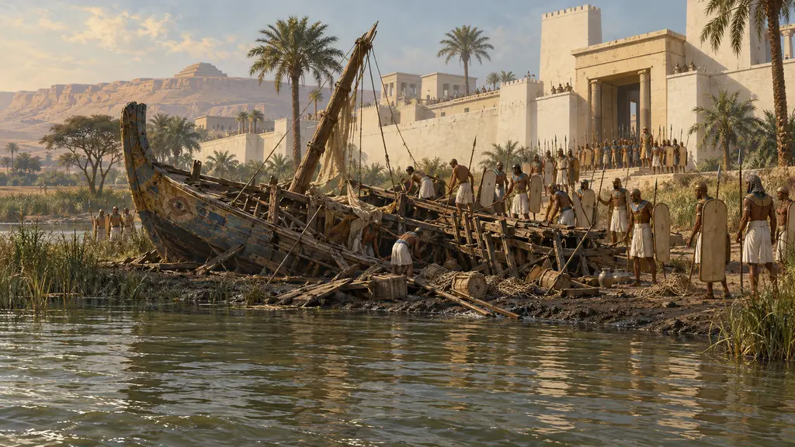
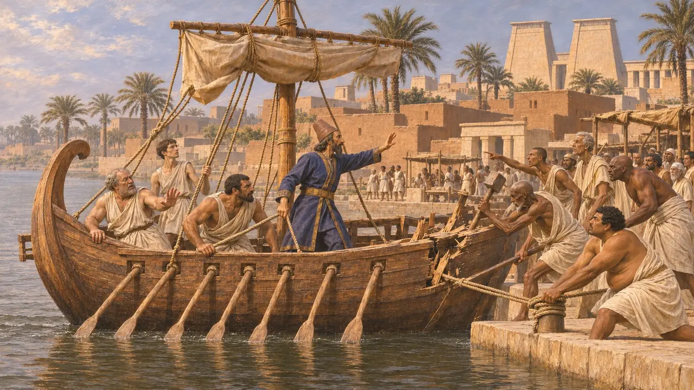
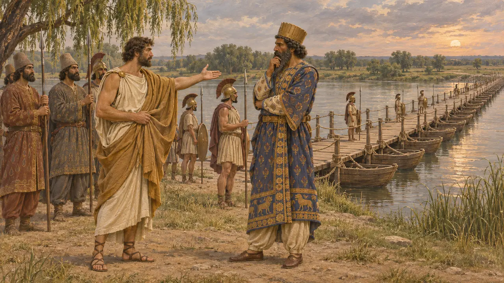
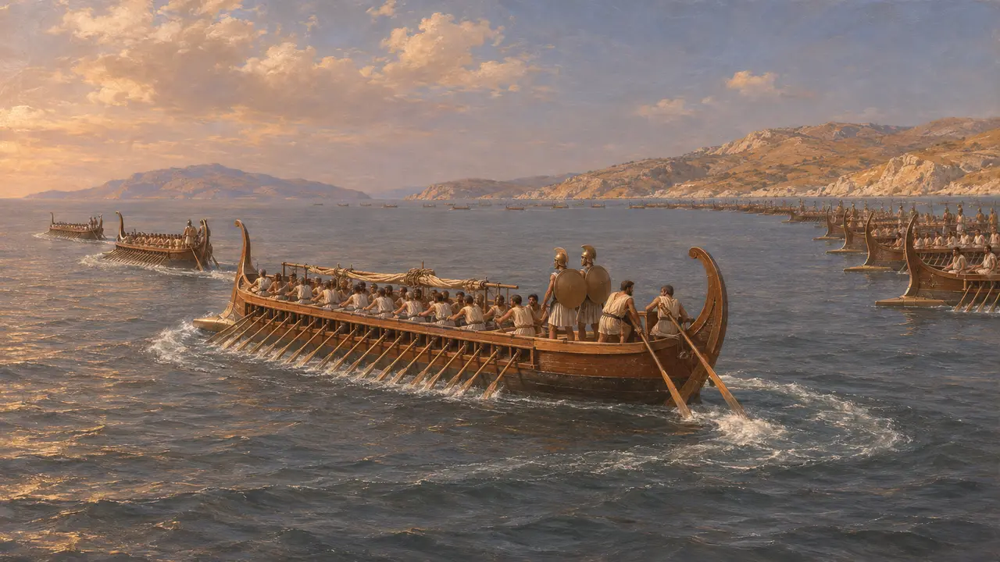
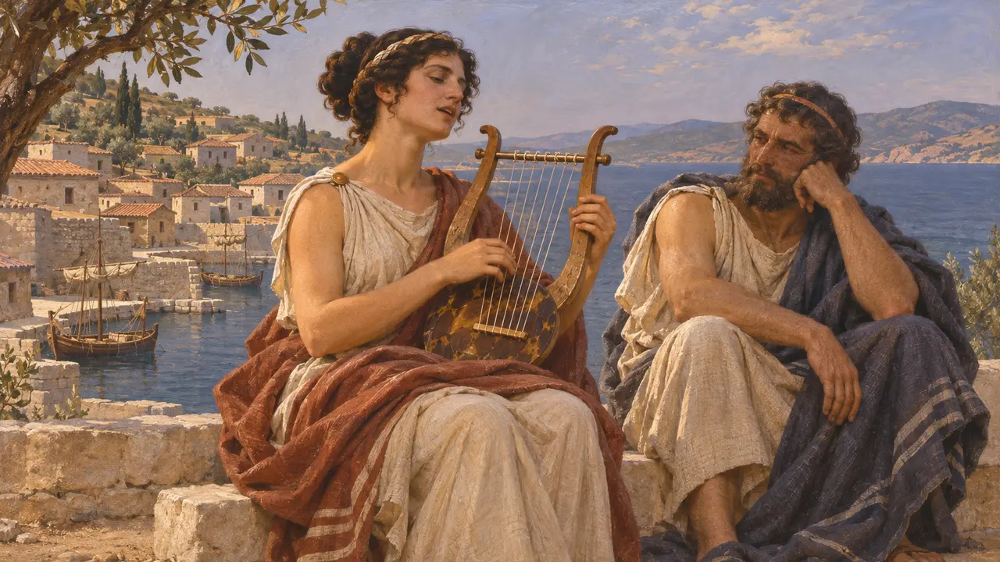

Лесбос и Митилена
Большой эолийский остров у берегов Малой Азии и его главный город под властью Персии, VI–V века до н. э.
Лесбос — большой остров у эолийского побережья Малой Азии. Геродот насчитывает на нём пять городов, из которых Митилена была величайшим. Её корабли шли в поход за Камбисом в Египет и за Дарием к Истру, её тиран Кой давал совет Дарию, а при Ладе её семьдесят кораблей покинули строй.
В игре: Корабль из Митилен везёт царского глашатая вверх по Нилу на уровне в Мемфисе, Кой Митиленский советует Царю у Истра, а лесбосцы покидают строй при Ладе на уровне в Сардах.

Корабль из Митилены
Античное свидетельствоКогда египтяне заперлись в Мемфисе, говорит Геродот, Камбис отправил вверх по реке митиленский корабль с персидским глашатаем, чтобы позвать их к переговорам. Они высыпали наружу, уничтожили корабль и растерзали его команду. Позже Камбис казнил десять знатных египтян за каждого митиленца.
Herodotus 3.13-14

Кой у моста
Античное свидетельствоУ Истра Дарий намеревался разрушить свой мост и взять его стражу с собой. Кой, сын Эрксандра, предводитель митиленцев, посоветовал оставить мост нетронутым. По возвращении Дарий сделал Коя тираном Митилены; в 499 году до н. э. мятежники выдали его митиленцам, и те побили его камнями.
Herodotus 4.97, 5.11, 5.37-38

Семьдесят кораблей у Лады
Античное свидетельствоВ ионийской линии при Ладе лесбосцы выставили семьдесят кораблей и стояли рядом с самосцами на западном краю. Когда самосцы ушли в море, говорит Геродот, большая часть лесбосцев последовала за ними, и строй распался. На следующий год персидский флот взял Лесбос вместе с Хиосом и Тенедосом и прочесал острова, ловя их жителей.
Herodotus 6.8, 6.14, 6.31

Эолийские города и поэты
Античное свидетельствоГеродот причисляет пять лесбосских городов к эолийцам и говорит, что островитянам было меньше чего опасаться Кира, чем жителям материка. Около 600 года до н. э. Лесбос был родиной поэтов Сапфо и Алкея, а Геродот рассказывает, как брат Сапфо Харакс выкупил Родопис в Навкратисе.
Herodotus 1.151, 2.135
Источники
- Herodotus 1.151, 2.135, 3.13-14, 4.97, 5.11, 5.37-38, 6.8, 6.14, 6.31